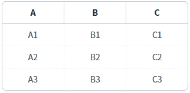
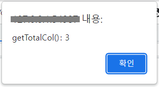

DataList의 'getTotalCol' 메소드를 사용하여 컬럼의 수를 반환받는 예제입니다. 'getTotalCol' 메소드는 GridView에 구성된 컬럼과는 관련이 없습니다.
DataList의 컬럼 수 반환받기
1
STEP 1: 초기 상태를 확인합니다.
DataList는 3개의 컬럼으로 구성되어 있으며, 전체 데이터가 GridView에 표시되어 있습니다.
Image 1.브라우저(Chrome) 실행 예시

2
STEP 2: 'DataList의 컬럼 수 반환받기' 버튼을 클릭합니다.
3
STEP 3: 실행 결과를 확인합니다.
DataList의 컬럼 수가 alert으로 표시됩니다.
Example 1.alert message
getTotalCol(): 3
Image 2.브라우저(Chrome) 실행 예시

DataList의 'getTotalCol' 메소드를 사용하여 스크립트를 작성합니다.
Example 2.Script
// 예제 파일에서는 스크립트 'scwin.btn_exam1_1_onclick'에 작성되어 있습니다. // DataList 'dlt_exam'의 컬럼 수를 반환받습니다. var result = dlt_exam.getTotalCol() // 반환 값 예시) 3
getTotalCol( )